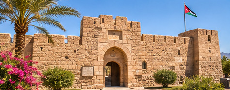
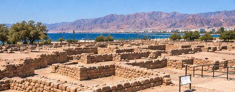
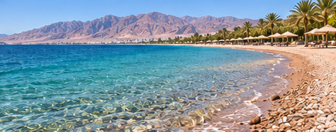
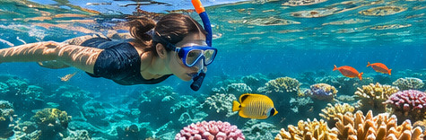
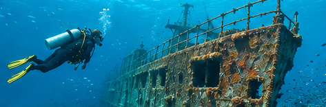
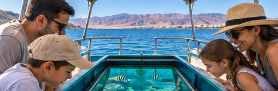

Aqaba
Coastal history and coral reefs on Jordan’s Red Sea.
Places to explore in Aqaba
-

Aqaba Fort
A fort on the old pilgrim route, built in its present form under the Mamluk sultan al-Ghuri in about 1510–1517 and later added to by the Ottomans.
-

Ancient Ayla
The excavated walls and gates of Ayla, an early Islamic port town founded around AD 650 and abandoned by the early 12th century.
-

South Beach
A relaxed, natural beach with clear waters for swimming.
Experiences to try in Aqaba
-

Snorkel the Coral Reefs
Explore colourful coral reefs just off Aqaba’s coast.
-

Go Scuba Diving
Discover shipwrecks and rich marine life in Aqaba’s waters.
-

Take a Glass-Bottom Boat
See Aqaba’s underwater world without getting wet.
Plan your visit
- Suggested visit
- One to two days. Wadi Rum is about an hour’s drive away.
- Getting there
- About four hours’ drive south of Amman. King Hussein International Airport has flights from Amman.
- What to bring
- Swimwear, sun protection and water shoes. Never stand on the coral.
Diving and boat trips are optional and booked locally. Summer days are very hot, so plan time in the water for the morning or late afternoon.
Questions about visiting Aqaba
How many days do you need in Aqaba?
One to two days: one for snorkelling, diving or a boat trip, and one for Aqaba Fort, ancient Ayla and the beach. Aqaba is easy to combine with Wadi Rum, about an hour’s drive away.
Can beginners snorkel in Aqaba?
Yes. The coral reefs lie just off the coast, so you can snorkel from the shore in calm water. If you would rather stay dry, a glass-bottom boat shows you the reef. Never stand on the coral.
Is Aqaba good for children?
Yes. South Beach has clear water for swimming, and a glass-bottom boat lets children see the reef without getting wet. Pack water shoes and sun protection.
When is the best time of day to swim in Aqaba?
Summer days are very hot, so plan time in the water for the morning or late afternoon. In the cooler months, the middle of the day is pleasant.